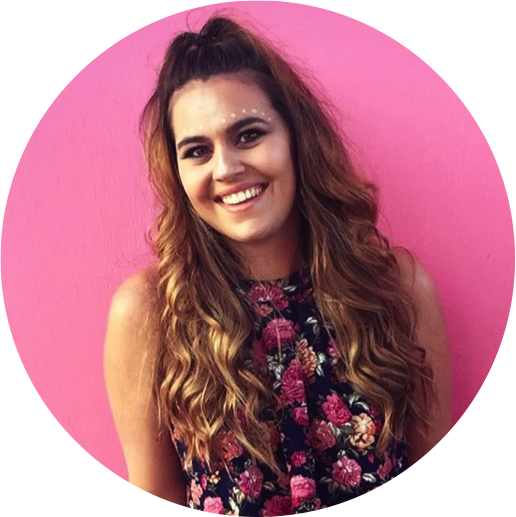

Programming and designing are just a few of my many passions. Ever since I was little, I loved delving into different technologies, even coding a Club Penguin fan page
website when I was in middle school. Since then, I completed my undergraduate degree in Computer Science at The University of Georgia, and I am currently completing my Master's in Human Computer Interaction at Georgia Tech. When I'm not focusing on school and programming, you
will most likely find me playing golf, playing piano, creating art (both physically and
digitally), and playing video games. Scroll down to learn even more about me!
student
• In May 2018, I completed my undergrad degree in Computer Science at The University of Georgia, with a certificate in New Media.
* Honors Program
* Teaching Assistant for Intro to Programming and Software Development
* Vice President of UGA's ACM Chapter
* Design Coordinator for UGA Hacks
* 3.71 GPA
* My classes included Software Engineering, Database Management, Global Information Systems, Human Computer Interaction, and much more.
• Now, I am obtaining my Master's in Human Computer Interaction at Georgia Tech
* Exploring HCI, UX, and user research practices in order to start my career in the HCI field.
leader
• Vice President of UGA Association of Computing Machinery
* Was in charge of ACM's Special Interest Groups (SIGs), and ensured that they had the resources they needed in order to succeed
* Ensured that all coordinating efforts were accomplished in order for ACM to maximize their events and lead to successful turnouts.
* I have coordinated efforts in order to host Professor Talks, Career Nights, and socials for ACM
• Design Coordinator for UGA Hacks, UGA's annual hackathon
* I helped coordinate with the rest of the leadership team about design efforts, including logos and banners, in order to help advertise and give a professional look to our hackathon.
• Team Leader for UGA HEROs, an organization to help raise awareness for children and adults dealing with HIV/AIDs
* Organized 30 members for weekly meetings in order to fundraise and plan events for children affected by HIV/AIDs
intern
• In the summer of 2016, I interned at The Home Depot as a Software Development intern.
* Worked on Unbundled Home Delivery team with 8 software developers
* Paird with another internt o create the Home Delivery Map application which used Google Maps to visualize the starting points and destinations for all of the delivery trucks for The Home Depot.
* This application is now used internally on the Home Delivery team, especially for their Project Managers, in order to help visualize the delivery truck process to clients and other coworkers.
• In the summer of 2017, I interned at The Climate Corporation as a Software Engineering intern.
* Worked on iOS Experience team with 6 software developers
* Developed internal app that used an existing service to help manage feature flags for their app, Fieldview, and enhance the user experience that previously existed for this service.
* This app, which I named Grouper, is now used internally by the company as a whole, saving a lot of time and money because of the increased efficiency from the app.
• Now, I am looking for an internship for summer 2019. While my past internships have been focused on development, my skillset I have acquired through self-learning in undergrad and my new pursuit in the Master's of Human Computer Interaction at Georgia Tech have lended myself ready for an internship in UX Design.
achiever
• UGA Honor's Program
• Zell Miller Scholarship
• Charter Scholarship
• President's and Dean's List at UGA